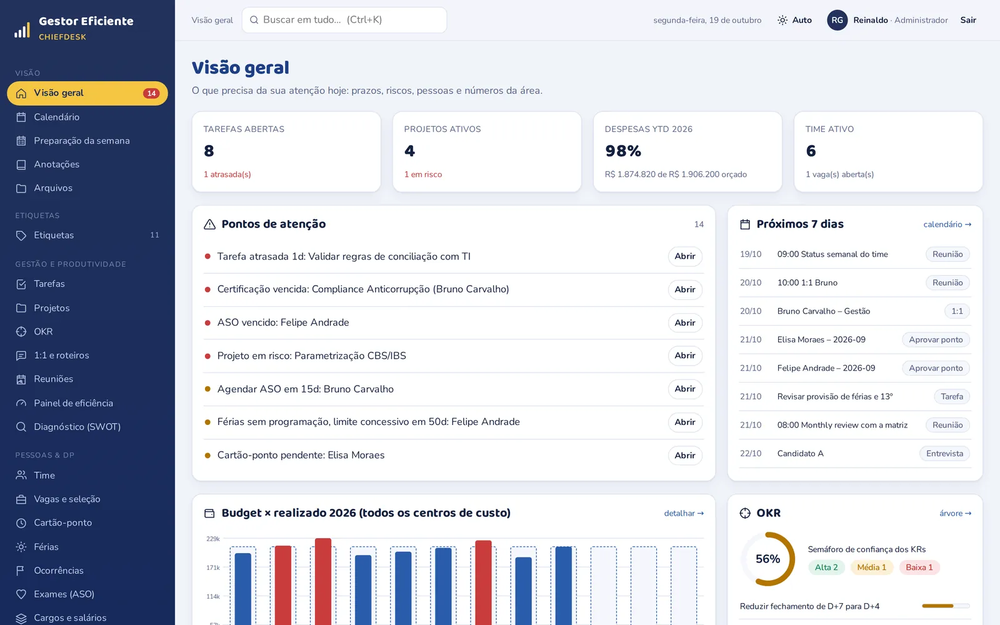
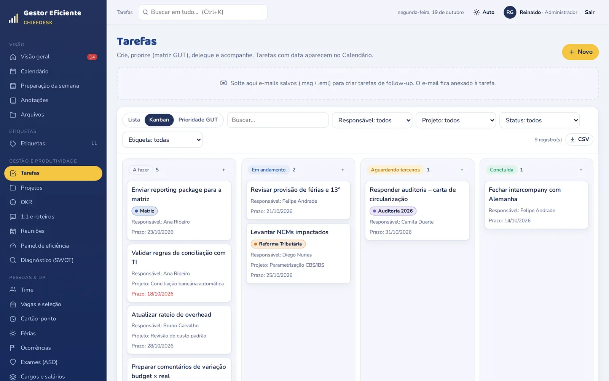
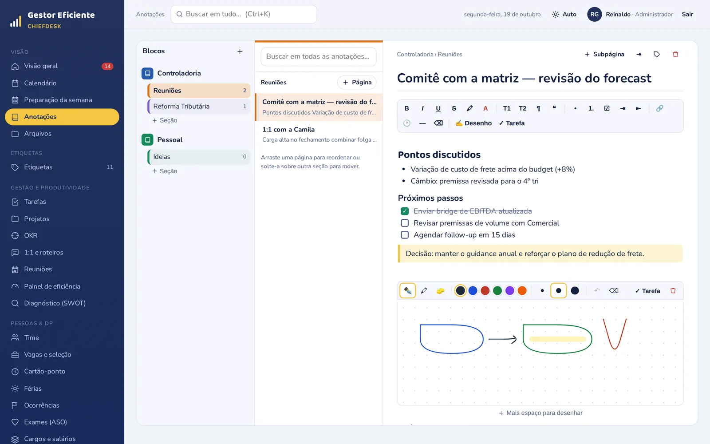
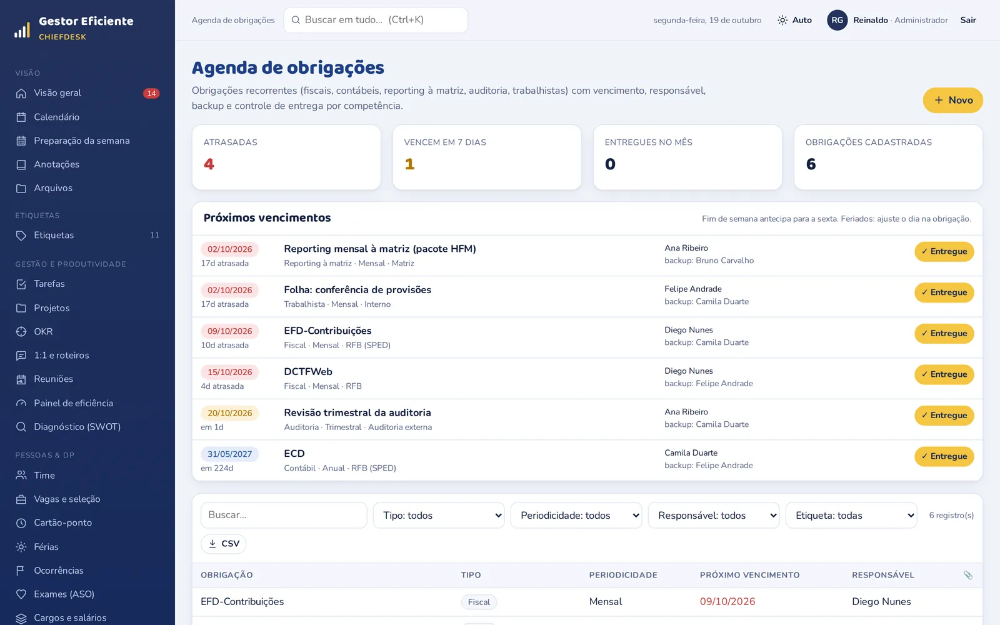
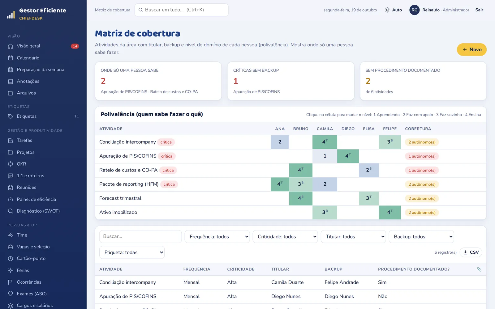
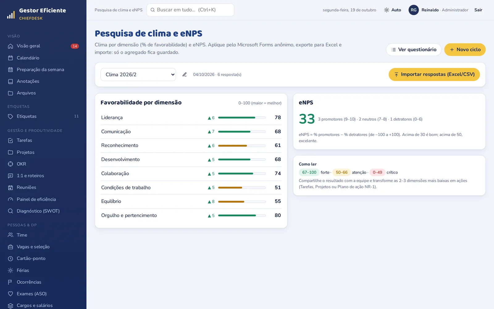
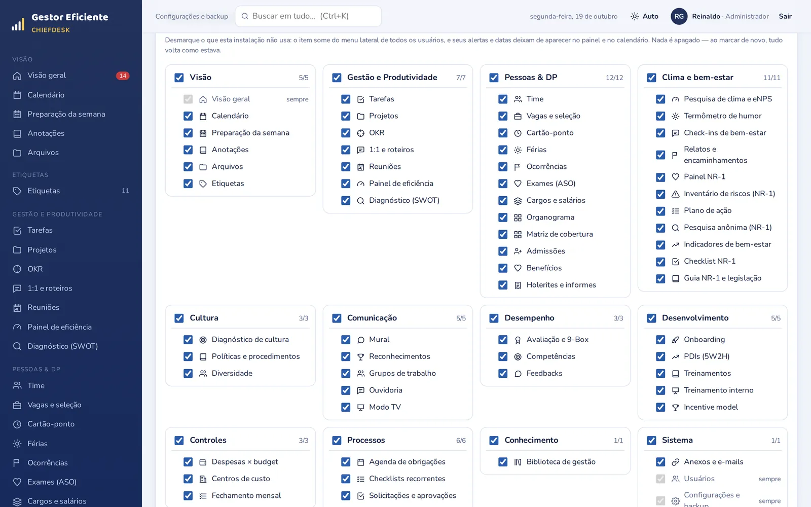

Planilhas espalhadas
Férias, metas, orçamento e checklists em dezenas de arquivos, cada um numa versão.
Tarefas, follow-ups, pessoas, clima e processos da sua área em uma única plataforma. Você abre de manhã e em dois minutos sabe exatamente onde agir.

Os controles da área estão espalhados em planilhas, e-mails e cadernos. Quando o problema aparece, já virou urgência.
Férias, metas, orçamento e checklists em dezenas de arquivos, cada um numa versão.
Pendências presas na caixa de entrada. Ninguém lembra quem estava esperando o quê.
Entregas fiscais, reporting à matriz e auditoria dependem da memória de uma pessoa.
O humor e a carga da equipe só aparecem na avaliação de fim de ano, quando já é tarde.
Quando alguém-chave sai de férias, o processo para.
Sem um painel único, o gestor descobre os problemas tarde demais.
O mesmo cadastro de pessoas, o mesmo calendário e as mesmas etiquetas conversam entre todas as áreas. Você liga só o que vai usar.
Tudo o que vence, o que está parado e o que precisa de atenção.
Do cadastro ao desenvolvimento, com histórico completo de cada pessoa.
O pulso da equipe ao longo do ano, não só na avaliação.
Do fechamento mensal às pequenas aprovações do dia a dia.
Telas reais do sistema, com dados de exemplo.
O e-mail salvo do Outlook vira follow-up com remetente, assunto e o próprio e-mail anexado.

Blocos, seções e páginas sem limite. Escreva digitando ou à mão no tablet: Apple Pencil no iPad, S Pen ou outra caneta no Android.

Obrigações fiscais, contábeis, reporting à matriz e auditoria com vencimento calculado.

Titular, backup e nível de domínio de cada pessoa em cada atividade crítica da área.

Pesquisa de clima com eNPS, termômetro de humor semanal e um mural que a equipe lê.

O administrador escolhe as ferramentas visíveis. O que fica desligado some do menu, dos alertas e do calendário, e nada é apagado.

Guardadas só como hash forte. Ninguém vê a senha, nem o administrador.
Administrador, Gestor, Colaborador (sem salários) e Leitura. No plano Empresa, cada pessoa vê o que é dela, o que foi delegado ou compartilhado.
Pesquisas guardam só o resultado agregado; dados sensíveis aparecem só em números.
Quem criou e alterou cada registro, e backup completo com anexos.
Nada para instalar: navegador, tablet e celular, com conexão criptografada.
Controllers, CFOs, gerentes financeiros, de operações e de projetos.
Clima, avaliações, treinamentos, férias e indicadores sem montar planilhas.
Controle e evidência sem a complexidade de um ERP de RH.
Obrigações, prazos e equipes de vários clientes num só lugar.
Os planos usam o liga/desliga do menu: trocar de plano não exige migração de dados.
Sob consulta
Sob consulta
Sob consulta
Não. O Gestor Eficiente funciona no navegador do computador, do tablet e do celular, em Windows, Mac, iPad, iPhone e Android. No tablet e no celular dá para adicionar à tela de início e usar como app.
Sim. No Chrome do Android, as anotações à mão funcionam com S Pen (Galaxy Tab) e outras canetas ativas, com sensibilidade à pressão e sem a palma da mão riscar. No iPad, o mesmo vale para a Apple Pencil. Sem caneta, dá para desenhar com o dedo ou com o mouse.
Sim. Você conecta um ou mais calendários publicados do Outlook, do Google Agenda ou do iCloud, e as reuniões aparecem e se atualizam sozinhas. E-mails salvos (.msg ou .eml) viram tarefas com o e-mail anexado.
Não é essa a ideia. O Gestor Eficiente cuida da rotina do gestor, do clima da equipe e dos controles que hoje vivem em planilhas, e importa dados por planilha quando precisa.
Sim. As respostas são aplicadas pelo Microsoft Forms anônimo e o sistema guarda só o resultado agregado por dimensão, exibido apenas com 5 ou mais respostas. No termômetro de humor, o servidor grava só a semana e a nota.
O Individual é para um gestor organizar a própria rotina: tudo na conta é dele. O Empresa é para a equipe: cada pessoa vê o que é dela, o que foi delegado a ela e o que alguém compartilhou, com aceite das tarefas delegadas e a lista de pendências de cada um. Dá para trocar de plano depois, sem perder dados.
Pode, e recomendamos. Você liga 2 ou 3 ferramentas no começo e ativa as outras quando quiser, sem migração.
Começamos com uma demonstração de 30 minutos e um piloto em uma área, com os seus dados. A importação de pessoas, orçamento e chamados é feita por planilha.
Mostramos o sistema com exemplos da sua realidade e montamos juntos o menu da sua área.
Conte rapidamente como é a sua área e escolhemos juntos por onde começar.